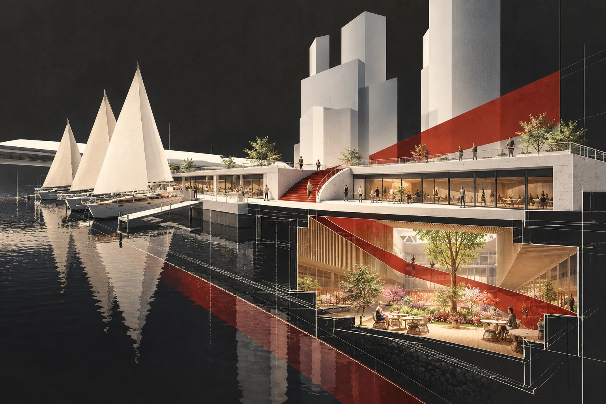
01
Многофункциональная набережная «Москва-Сити»
Moscow-City multifunctional embankment
Исходная обложка проекта
ART GROUP · COVER STUDIES · V1
Архитектурные постеры на основе материалов ART Group: угольный фон, тёплый свет, чертёжная графика и красный пространственный акцент. Нажмите на изображение, чтобы открыть PNG-мастер. Это художественные AI-интерпретации, подготовленные для выбора обложек.

Moscow-City multifunctional embankment
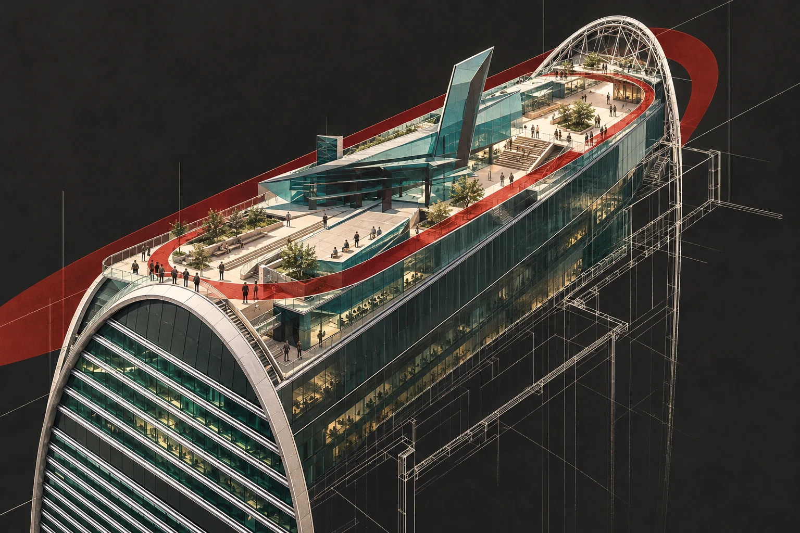
Territorium — Imperia Tower

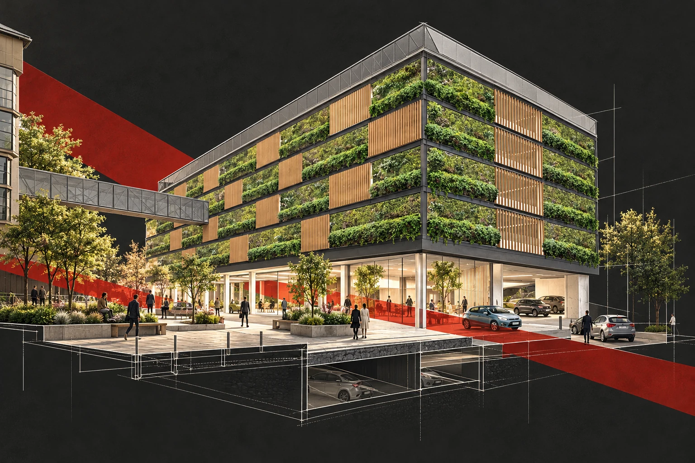
Multilevel parking in Khamovniki

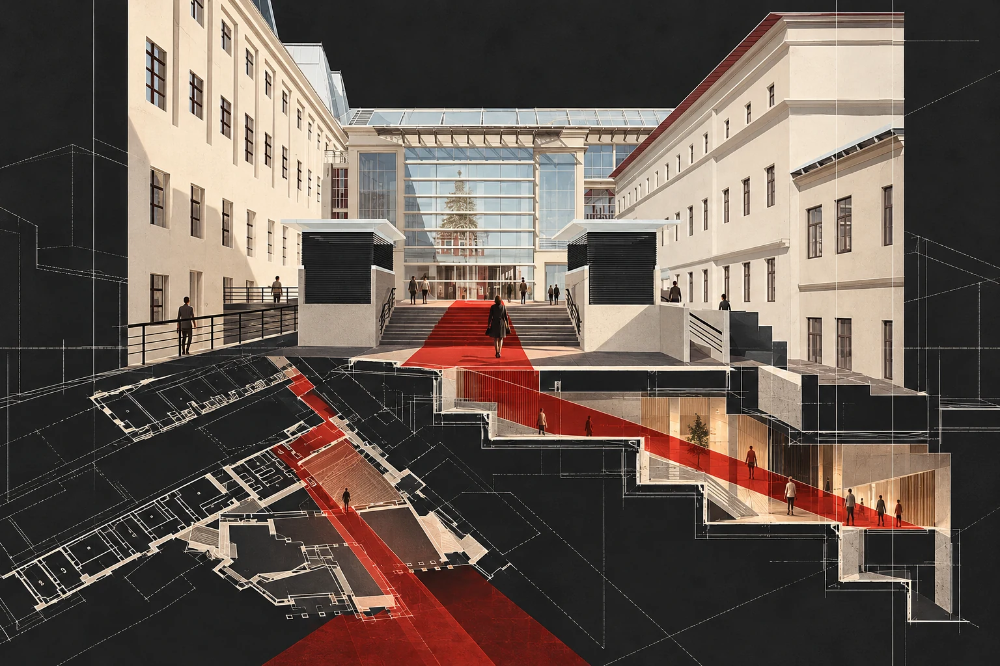
Passage from Teatralnaya to GUM

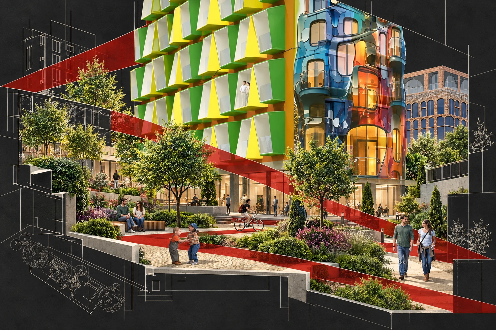
Be Happy! residential quarter

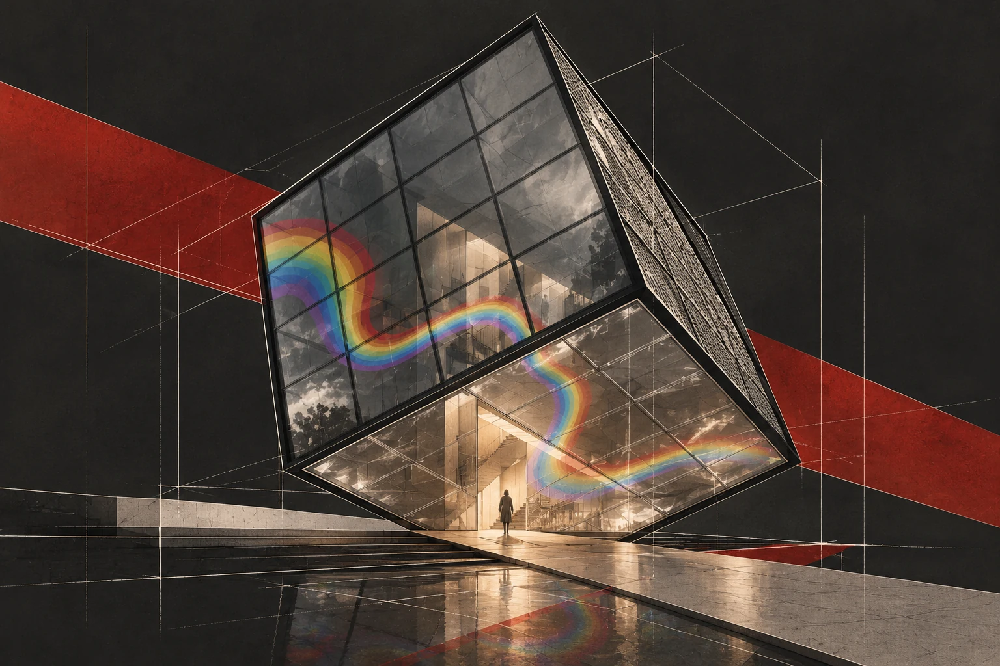
Psychological Cube

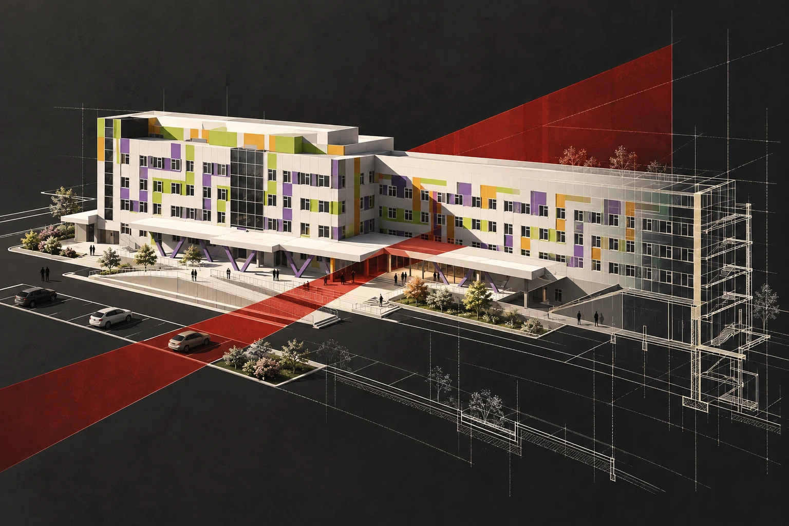
Maternity hospital in Magadan

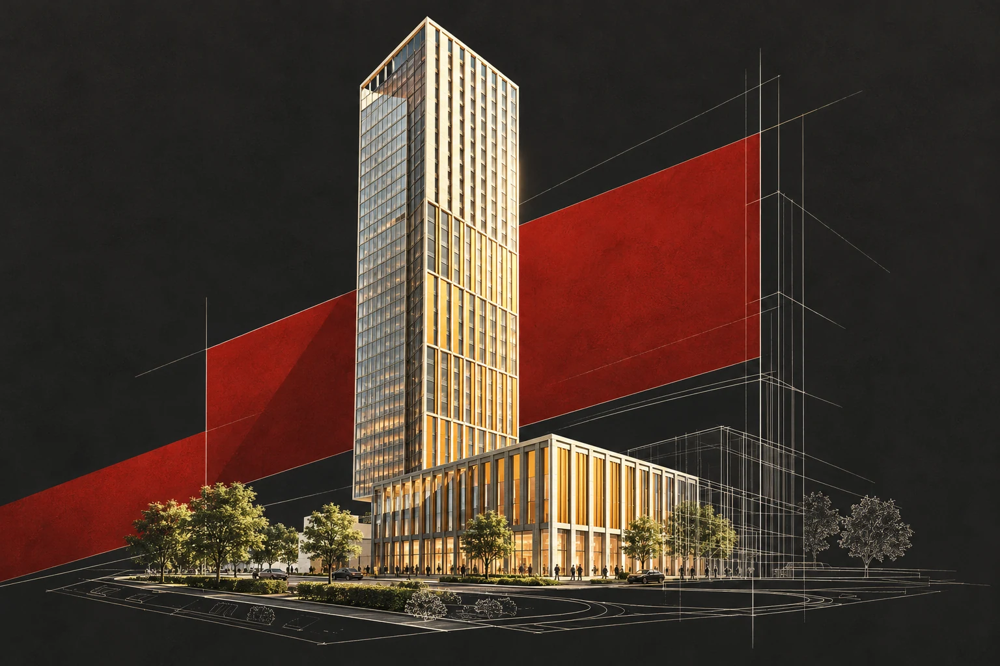
Mixed-use complex on Rublevskoye Highway

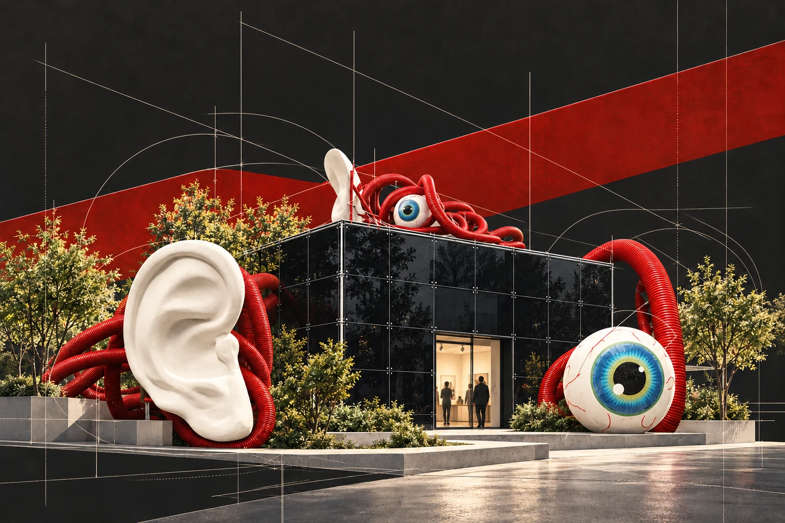
Ear-Eye installation

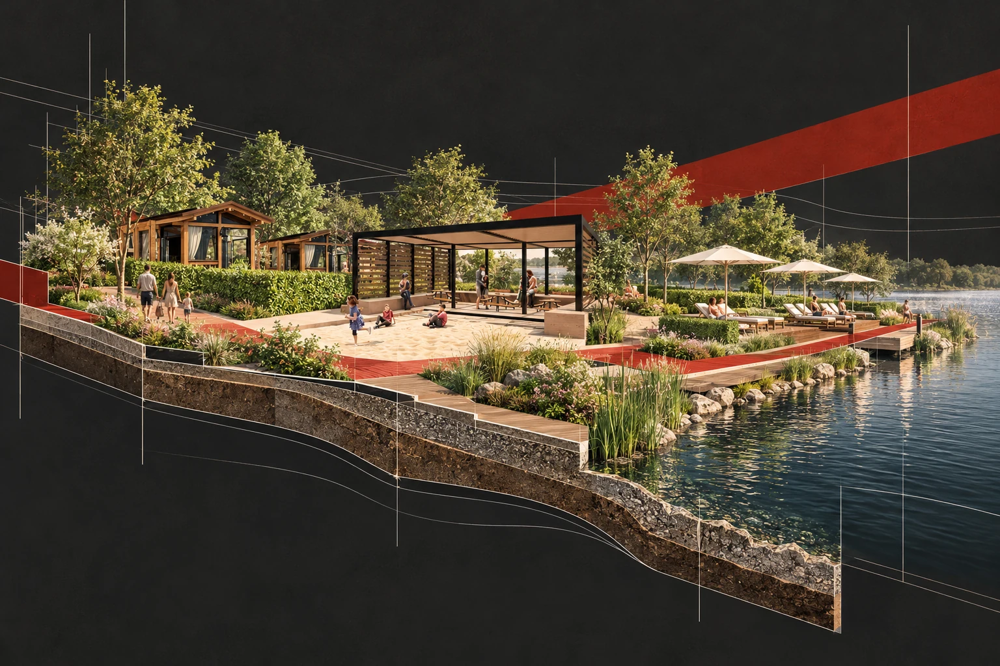
Iksha training and wellness centre

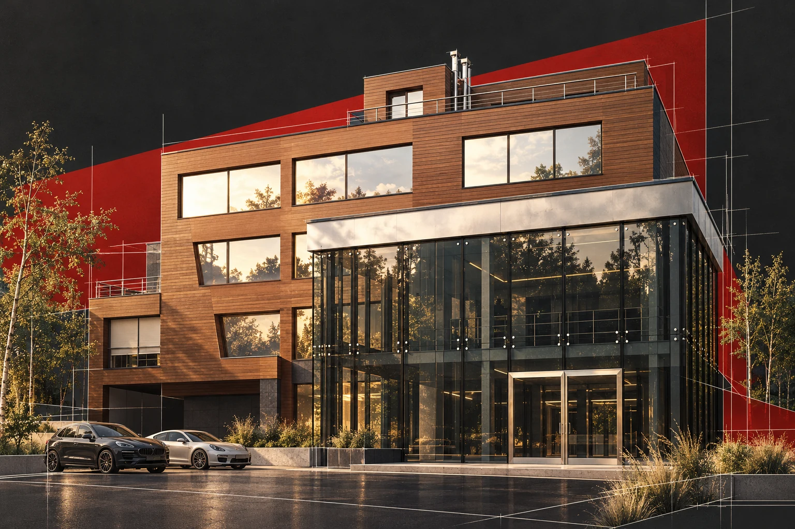
Public and business centre in Zhukovka